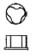
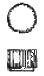
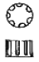
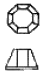
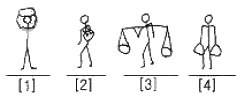
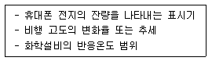
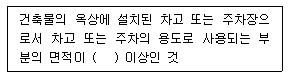

실내건축기사(구) (2008-03-02 기출문제)
1과목: 실내디자인론
1. 건축화조명 중 천장, 벽의 구조체에 의해 광원의 빛 이 천장 또는 벽면으로 가려지게 하여 반사광으로 간접 조명하는 방식은?
- 밸런스 조명
- 코브 조명
- 코니스 조명
- 캐노피 조명
(정답률: 82%)

2. 상점의 동선계획에서 길수록 효율이 좋은 것은?
- 관리 동선
- 고객 동선
- 판매원동선
- 상품 반출입동선
(정답률: 96%)
3. 붙박이가구의 디자인을 할 경우에 고려해야 할 사항과 가장 거리가 먼 것은?
- 크기와 비례의 조화
- 기능의 편리성
- 분산적 배치
- 실내마감재로서의 조화
(정답률: 75%)
4. 부엌 작업대의 가장 효율적인 배치 순서는?
- 준비대-조리대-개수대-가열대-배선대
- 준비대-개수대-조리대-가열대-배선대
- 준비대-가열대-조리대-개수대-배선대
- 준비대-조리대-개수대-배선대-가열대
(정답률: 83%)
5. 천장에 매달려 조명하는 방식으로 조명기구 자체가 빛을 발하는 악세사리 역할을 하는 조명방식은?
- 다운라이트(down light)
- 스포트 라이트(spot light)
- 펜던트(pendant)
- 브라켓(bracket)
(정답률: 92%)
6. 르 꼬르뷔제(Le Corbusier)의 ‘Modulor'는 무슨 개념에 의한 것인가?
- 리듬
- 비례
- 통일
- 조화
(정답률: 81%)
7. 공간을 형성하는 부분(바닥, 벽, 천장)과 설치되는 가구, 기구들의 위치를 정하는 디자인 단계는?
- 공간설정의 단계
- 디자인 이미지의 구축단계
- 레이아웃(lay-out)단계
- 생활패턴의 파악단계
(정답률: 58%)
8. 실내디자인의 프로그래밍(programming)은 목표설정 - 조사 - 분석 - 종합 - 결정의 순서로 진행된다. 다음 중 분석단계에서 행해져야 할 사항은?
- 총 공사비의 산출
- 계획도면의 확정
- 자료분류 및 정보의 해석
- 실내마감재 및 색채결정
(정답률: 80%)
9. 다음 중 실내디자인의 개념과 가장 관계가 먼 것은?
- 실내디자인은 대상 공간의 기능을 만족시켜야 한다.
- 실내디자인은 인간 생활에 대한 쾌적함, 인간적 감성을 만족시켜야 한다.
- 실내디자인은 건축적구조 및 환경과의 관계를 고려해야 한다.
- 실내디자인은 디자이너의 주관적 차이성이 강조되어야 한다.
(정답률: 100%)
10. 상점의 실내계획에 대한 설명으로 옳지 않은 것은?
- 실내의 바닥면은 큰 요철이 없으며 미끄럽지 않도록 한다.
- 바닥, 벽, 천장은 상품에 대해 배경역할을 할 수 있도록 한다.
- 고객의 동선이 원활하게 흐를 수 있도록 계획한다.
- 실내의 사용색채는 상품과 무관하게 강렬한 인상을 주는 색으로 한다.
(정답률: 100%)
11. 거실의 가구배치에 대한 설명으로 옳지 않은 것은?
- ㄱ자형 : 단란한 분위기를 주며 비교적 면적을 적게 차지한다.
- ㄷ자형 : 단란한 분위기를 주며 여러 사람과의 대화시에 적합하다.
- ㅡ자형 : 가장 면적을 많이 차지하며 넓은 공간을 사용한다.
- 노퍼니처형(no furniture) : 가구를 거의 두지 않는 형으로, 공간이 넓고 자유로워 보인다.
(정답률: 100%)
12. 공간에 대한 설명 중 잘못된 것은?
- 공간은 적극적 공간(positive space)과 소극적 공간(negative space)으로 구성되어 있다.
- 좁은 공간은 시간의 개념을 수반하지 않는다.
- 공간은 사용자가 보는 위치에 따라 시각적으로 수없이 변화한다.
- 실내공간은 부피로서의 체적 개념을 갖는 넓이로 이해되고 취급되어야 한다.
(정답률: 78%)
13. 공간구성의 유형에 대한 설명 중 옳지 않은 것은?
- 구심형 공간구성은 중앙의 우세한 중심공간과 그 주위의 수많은 제2의 공간으로 이루어진다.
- 집합형 공간구성은 구심형 공간구성과 선형 구성의 두가지 요소를 조합한 것이다.
- 선형 공간구성이란 일련의 공간의 반복으로 이루어진 선형적인 연속이다.
- 격자형 공간구성은 공간 속에서의 위치와 공간 상호간의 관계가 3차원적 격자 패턴 속에서 질서정연하게 배열되는 형태 및 공간으로 구성된다.
(정답률: 71%)
14. 디자인은 기본적으로 점, 선, 면으로 구성되어 진다. 점에 관한 설명 중 맞는 것은?
- 기하학적인 정의로 크기가 없고 위치만 있다.
- 선의 굴절에서는 나타나지 않는다.
- 공간에 점이 위치할 때, 한점으로는 집중효과가 없다.
- 점의 크기는 주변환경에 따라 절대적으로 지각된다.
(정답률: 66%)
15. 호텔의 실내계획에 대한 설명 중 옳은 것은?
- 호텔의 동선은 이동하는 대상에 따라 고객, 종업원, 물품 등으로 구분되며 물품동선과 고객동선은 교차시키는 것이 좋다
- 프론트 오피스는 수평동선이 수직동선으로 전이되는 공간일 뿐 아니라, 외관과 함께 호텔의 전체적인 인상을 보여주는 역할을 하는 곳이다.
- 현관은 퍼블릭 스페이스의 중심으로 로비, 라운지와 분리하지 않고 통합시킨다.
- 주식당(main dining room)은 숙박객 및 외래객을 대상으로 하며 외래객이 편리하게 이용할 수 있도록 출입구를 별도로 설치하는 것이 좋다.
(정답률: 30%)
16. 실내 디자인의 원리 중 스케일과 비례에 관한 설명으로 부적당한 것은?
- 스케일은 인간과 물체와의 관계이며, 비례는 물체와 물체 상호간의 관계를 갖는다.
- 스케일을 검토하는데 있어 가장 중요한 대상이 되는 것은 공간이다.
- 비례는 물리적 크기를 선으로 측정하는 기하학적 개념이다.
- 공간내의 비례관계는 평면, 입면, 단면에 있어서 입체적으로 평가되어야 한다.
(정답률: 48%)
17. 단위공간 사용자의 특성, 목적 등에 따라 몇 개의 생활권으로 구분하는 실내디자인 용어는?
- 모듈(Module)
- 샘플링(Sampling)
- 죠닝(Zoning)
- 드로잉(Drawing)
(정답률: 91%)
18. 다음 중 질감에 대한 설명으로 옳지 않은 것은?
- 후각적이면서 시각적으로만 지각되는 재질감이다.
- 질감은 실내의 다양성과 흥미로움에 영향을 끼친다.
- 질감 선택시 고려해야 할 사항은 스케일, 빛의 반사와 흡수, 촉감 등의 요소이다.
- 질감이 거칠면 거칠수록 빛을 흡수하여 무겁고 안정된 시각적 느낌을 준다.
(정답률: 83%)
19. 다음의 벽에 관한 설명 중 틀린 것은?
- 높이 1,800mm 정도의 벽은 시각적으로는 차단되니 프라이버시를 유지하기 힘들다.
- 높이 1,500mm 정도의 벽은 두 공간의 상호 통행이 어려우며 에워싼 느낌을 준다.
- 높이 1,200mm 정도의 벽은 시각적으로 개방되고 에워싼 느낌을 준다.
- 높이 600mm 이하의 벽은 상징적 분리이다.
(정답률: 59%)
20. 평면이 돌출된 형태의 창으로 장식품을 두거나 간이 휴식 공간을 마련할 수 있는 창을 무엇이라고 하는가?
- 베이 윈도우(bay window)
- 픽쳐 윈도우(picture window)
- 윈도우 월(windown wall)
- 고창(clearestory)
(정답률: 89%)
2과목: 색채학
21. 어느 한 색상 중 가장 깨끗한 색가(色價)를 지닌 고채도의 색은?
- 한색
- 탁색
- 순색
- 난색
(정답률: 69%)
22. 빛을 프리즘에 통과 시켰을 때 나타난 스펙트럼상의 색 중 가장 긴 파장을 가지고 있는 것은?
- 노랑
- 빨강
- 녹색
- 보라
(정답률: 79%)
23. 감산혼합에 대한 설명으로 바른 것은?
- 색광의 혼합이다.
- 색료의 혼합이다.
- 색을 혼합할수록 채도가 높아진다.
- 색을 혼합하여도 명도나 채도가 변하지 않는다.
(정답률: 85%)
24. 비누거품이나 수면에 뜬 기름, 전복껍질 등에서 무지개색처럼 나타나는 색은?
- 표면색
- 조명색
- 형광색
- 간섭색
(정답률: 92%)
25. 낮에 빨간 물체가 날이 저물어 어두워지면 어둡게 보이고, 또 낮에 파랗게 보이는 물체는 밝게 보이는 것은 무엇 때문인가?
- 연색성
- 메타메리즘
- 푸르킨예현상
- 색각현상
(정답률: 88%)
26. 색의 이미지를 통일하기 위하여 고려할 사항이 아닌 것은?
- 색의 3속성 중 하나 혹은 2가지는 공통되게 한다.
- 따뜻한 색 계통과 찬 색 계통을 고루 선택해야 한다.
- 모두 동일한 색조에서는 액센트 색상이 필요하다.
- 색이 흩어져 떨어지는 느낌을 주어서는 안 된다.
(정답률: 65%)
27. 석유나 가스의 저장탱크를 흰색이나 은색으로 칠하는 가장 큰 이유는?
- 반사율이 높은 색이므로
- 흡수율이 높은 색이므로
- 명시성이 높은 색이므로
- 팽창성이 높은 색이므로
(정답률: 87%)
28. 먼셀 기호 “5YR 7/2”의 의미는?
- 색상은 주황의 중심색, 채도 7, 명도 2
- 색상은 빨간 기미를 띤 노랑, 명도 7, 채도 2
- 색상은 노란 기미를 띤 빨강, 명도 2, 채도 7
- 색상은 주황의 중심색, 명도 7, 채도 2
(정답률: 34%)
29. Moon Spencer 색채조화론의 내용으로 틀린 것은?
- 배색의 심리적인 효과는 균형점(balance point)에 의해 정해진다.
- 배색조화를 동일조화, 유사조화, 대비조화로 구분 하였다.
- 어느 기준점에 대하여 각 색채의 스칼라 모우먼트가 같을 때 조화된다.
- 미도(美度)는 M=C/0로 C는 복잡성 요소의 수이고, 0는 질서성 요소의 수를 나타낸다.
(정답률: 50%)
30. 실내 색채 계획에 관한 다음 설명 중 잘못된 것은?
- 먼저 주조색을 결정한 다음, 그 색과 조화되는 색을 적절한 비율로 선택한다.
- 휴식 공간의 색채는 대비조화, 난색계열, 부드러운 색조가 좋다.
- 명도와 채도를 점이의 수법으로 변화시켜 배색하면 리듬감이 생긴다.
- 밝은색은 위로, 어두운색은 아래로 배색하면 안정성이 있다.
(정답률: 83%)
31. 다음 색 중 호수, 명상, 영원, 성실, 심원 등의 연상 및 상징을 갖는 색은?
- 파랑
- 빨강
- 보라
- 초록
(정답률: 75%)
32. 다음 먼셀 색상기호 중 채도가 가장 높은 색은?
- 5BG
- 5R
- 5B
- 5P
(정답률: 88%)
33. 광원의 온도가 높아짐에 따라 광원의 색이 변한다. 색온도변화의 순으로 맞게 짝지어진 것은?
- 빨간색, 주황색, 노란색, 파란색, 흰색
- 빨간색, 주황색, 노란색, 흰색, 파란색
- 빨간색, 주황색, 파란색, 보라색, 흰색
- 빨간색, 주황색, 노란색, 파란색, 보라색
(정답률: 48%)
34. 두 개의 색을 동시에 비교할 때 크기가 달라 보이는 예가 있다. 색의 이러한 영향으로 물체의 크기를 다르게 조절하는 경우에 해당하는 것은?
- 자동차
- 냉장고
- 바둑돌
- 책상
(정답률: 79%)
35. 보는 밝기나 색이 조명 등의 물리적 변화에 대하여 망막 자극의 변화가 비례하지 않는 이유는?
- 시인성
- 항상성
- 유목성
- 잔상
(정답률: 53%)
36. 비렌의 색채 조화론에서 사용되는 색조군에 대한 설명 중 옳은 것은?
- 흰색과 검정이 합쳐진 밝은 색조(Tint)
- 순색과 흰색이 합쳐진 톤(Tone)
- 순색과 검정이 합쳐진 어두운 색조(Shade)
- 순색과 흰색 그리고 검정이 합쳐진 회색조(Gray)
(정답률: 75%)
37. 가볍게 보이려면 색의 속성을 어떻게 조절해야 하는가?
- 명도는 낮추고, 채도는 높인다.
- 명도를 높인다.
- 명도와 채도 모두 낮춘다.
- 채도를 높인다.
(정답률: 50%)
38. 올빼미나 부엉이가 밝은 낮에는 사물을 볼 수 없는 이유는?
- 추상체만 가지고 있기 때문이다.
- 간상체만 가지고 있기 때문이다.
- 낮에는 추상체가 활동을 억제하기 때문이다.
- 간상체의 수가 추상체보다 훨씬 많이 분포되어 있기 때문이다.
(정답률: 46%)
39. 색채조화이론 중 문⋅스펜서 이론과 가장 거리가 먼 것은?
- 조화와 부조화
- 색삼각형의 원리
- 조화의 면적효과
- 조화와 부조화의 미도 계산
(정답률: 57%)
40. 우리나라 색상표기의 산업규격표기법은?
- 문⋅스펜서 표기법
- 먼셀 표색계
- 오스트발트 표색계
- 비렌 표색계
(정답률: 79%)
3과목: 인간공학
41. 인체계측에 있어서 구조적 인체치수에 관한 설명으로 올바른 것은?
- 표준자세에서 움직이지 않는 피측정자를 대상으로 신체의 각 부위를 측정한다.
- 신체의 각 부위간에 수행하는 기능에 따라 영향을 받으며 여러 가지 변수가 내재해 있다.
- 손을 뻗어 잡을 수 있는 한계는 팔길이만의 함수가 아니고 어깨움직임, 몸통회전, 등구부림 등에 의해서도 영향을 받는다.
- 신체적 기능을 수행할 때 각 신체부위가 독립적으로 움직이는 것이 아니라 서로 조화를 이루어 움직이기 때문에 이 치수가 사용된다.
(정답률: 56%)
42. 다음 중 기계가 인간을 능가하는 기능이 아닌 것은?
- 암호화된 정보를 대량으로 신속하게 보관한다.
- 입력신호에 대해 정학하고 일관성 있는 반응을 한다.
- 비상사태에 대처하여 임기응변 할 수 있다.
- 반복적인 작업을 신뢰성 있게 수행한다.
(정답률: 86%)
43. 다음 중 조도(illumination)의 단위에 해당하는 것은?
- fc(foot-candle)
- fL(foot-Lamberts)
- lumen
- NIT(cd/m2)
(정답률: 49%)
44. 음이 한 옥타브가 높아지면 진동수는 몇 배가 되겠는가?
- 2배
- 4배
- 8배
- 10배
(정답률: 57%)
45. 다음 중 고온의 작업환경에서 인체의 반응과 관계가 가장 먼 것은?
- 체표면의 증가
- 피부혈관의 확장
- 체내의 염분 손실
- 근육의 긴장과 떨림
(정답률: 56%)
46. 다음 중 다회전용(多回轉用) 손잡이로 적절하지 않는 것은?




(정답률: 46%)
47. 다음 [그림]과 같이 짐을 나르는 경우 상대적인 에너지가(價:산소소비량)가 가정 적은 것은?

- [1]
- [2]
- [3]
- [4]
(정답률: 38%)
48. 다음 중 눈에 대한 설명으로 옳은 것은?
- 빛을 감지하는 간상세포는 수정체에 존재한다.
- 수정체가 두꺼워지면 원시안이 된다.
- 원추세포는 색을 구별할 수 있다.
- 암순응 명순응보다 빠르다.
(정답률: 75%)
49. 다음 중 게슈탈트의 지각범주와 관계가 가장 적은 것은?
- 유사성
- 연속성
- 독자성
- 폐쇄성
(정답률: 58%)
50. 다음 중 신체 부위의 동작과 설명이 올바르게 연결된 것은?
- 굴곡(flexion) - 관절이 만드는 각도가 증가하는 동작
- 신전(extension) - 관절이 만드는 각도가 감소하는 동작
- 외전(abduction) - 신체 중심선을 향한 동작
- 회전(rotation) - 분절의 운동궤적이 원뿔을 형성하는 동작
(정답률: 66%)
51. 다음 중 반사율을 구하는 공식으로 옳은 것은?
- 광도/조도
- 조도/광도
- 조도-광도/광도
- 조도-광도/조도
(정답률: 44%)
52. 다음 중 내이(內耳)에 관한 설명으로 옳은 것은?
- 소리를 모아주는 역할을 한다.
- 소리를 청신경 중추에 보내는 역할을 한다.
- 고막, 고실, 이관, 정원창, 난원창으로 구성되어 있다.
- 목과 코로 연결되어 있다.
(정답률: 78%)
53. 다음 중 음의 단위가 아닌 것은?
- phon
- sone
- dB
- hue
(정답률: 74%)
54. 다음 중 시각적 표시장치에 있어서 지침의 일반적인 설계방법으로 적절하지 않은 것은?
- 지침의 끝은 작은 눈금과 겹치도록 한다.
- 선각이 약 20°정도 되는 뾰족한 지침을 사용한다.
- 시차를 없애기 위하여 지침을 눈금면에 밀착시킨다.
- 원형 눈금의 경우 지침의 색은 선단에서 눈금의 중심까지 칠한다.
(정답률: 80%)
55. 정량적 시각 표시장치의 기본 눈금선 수열로 가장 적당한 것은?
- 0, 1, 2, ...
- 0, 3, 6, ...
- 0, 5, 10, ...
- 0, 8, 16, ...
(정답률: 72%)
56. 다음 중 Weber의 법칙에 관한 설명으로 틀린 것은?
- 한계효용체감의 법칙과 동일한 의미이다.
- I를 기준자극, △I를 변화감지역(JND) 이라 하면 “△I/I = 상수”로 일정하다.
- 인간이 지각하는 밝기의 증가는 조명의 강도와 선형적으로 비례한다.
- 기준자극이 커질수록 동일한 크기의 자극을 얻기위해서는 더 강한 자극을 주어야 한다.
(정답률: 60%)
57. 관절에서 몸의 뼈와 뼈를 결합시켜주는 기능을 하는 것은?
- 인대(ligament)
- 근육(muscles)
- 건(tendon)
- 척수(spinal cord)
(정답률: 71%)
58. 다음 중 조종-반응 비율(C/R 비)에 대한 설명으로 틀린 것은?
- 표시장치의 이동거리에 대한 조종장치를 이동한 거리의 비율이다.
- C/R 비가 클수록 조종장치는 민감하다.
- 최적 C/R 비는 조정시간과 이동시간의 합이 최소가 되는 점을 가리킨다.
- C.R 비가 낮을수록 조정시간은 오래 걸린다.
(정답률: 40%)
59. 다음 중 정신적 작업부하의 측정척도의 내용으로 올바른 것은?
- 다른 부하의 영향을 받는 척도이어야 된다.
- 시간 경과에 관계가 있는 척도이어야 한다.
- 피측정자가 수용할 수 없는 측정척도도 가능하다.
- 다른 과업의 상황을 직관적으로도 구별할 수 있는 척도이어야 한다.
(정답률: 65%)
60. 다음 [보기]와 같은 경우에 적용할 시각적 표시장치 중 가장 적절한 것은?

- 정량적 표시장치
- 정성적 표시장치
- 묘사적 표시장치
- 신호 및 경보등
(정답률: 30%)
4과목: 건축재료
61. 합판에 관한 설명 중 틀린 것은?
- 방향에 따른 강도차가 원재에 비해 적다.
- 곡면가공을 하여도 균열이 생기지 않는다.
- 목재의 장식적 가치를 증가시킬 수 있다.
- 함수율 변화에 의한 신축변형이 크다.
(정답률: 59%)
62. 다음 접착제에 관한 기술 중 틀린 것은?
- 페놀수지 접착제는 용제형과 에멀젼형이 있고 멜라민, 초산비닐 등과 공중합시킨 것도 있다.
- 요소수지 접착제는 내열성이 200℃이고 내수성이 대단히 크며 전기절연성도 우수하다.
- 멜라민수지 접착제는 열경화성수지 접착제로 내수성이 우수하여 내수합판용에 사용된다.
- 에폭시 접착제는 기본 점성이 크며 내수성, 내약품성, 전기절연성이 모두 우수한 만능형 접착제이다.
(정답률: 43%)
63. 1종 점토벽돌의 압축강도는 최소 얼마 이상이어야 하는가?
- 9.80 N/mm2
- 10.78 N/mm2
- 15.69 N/mm2
- 20.59 N/mm2
(정답률: 35%)
64. 요소수지의 성질에 대한 설명 중 옳지 않는 것은?
- 열경화성수지이다.
- 내수합판의 접착제로 널리 사용된다.
- 무색이어서 착색이 자유롭다.
- 멜라민수지보다 내열성, 내수성이 우수하다.
(정답률: 59%)
65. 목재의 섬유포화점(fiber saturation point)에서의 함수율은?
- 약 15%
- 약 30%
- 약 40%
- 약 50%
(정답률: 69%)
66. 시멘트의 분말도에 관한 설명 중 옳지 않은 것은?
- 시멘트의 분말이 미세할수록 수화반응이 느리게 진행하며 강도의 발현이 느리다.
- 분말이 과도하게 미세하면 풍화되기 쉽고 또한 사용후 균열이 발생하기 쉽다.
- 시멘트의 분말도 시험으로는 체분석법, 피크노메타법, 브레인법 등이 있다.
- 분말도는 시멘트의 성능 중 수화반응, 블리딩, 초기강도 등에 크게 영향을 준다.
(정답률: 74%)
67. 다음 도료 중 내수성이 가장 나쁜 도료는?
- 수성페인트
- 유성바니시
- 염화비닐수지도료
- 알루미늄페인트
(정답률: 77%)
68. 미장재료 중 석고에 관한 설명으로 옳지 않은 것은?
- 석고의 화학성분은 황산칼슘이다.
- 회반죽에 석고를 약간 혼합하면 수축 균열을 방지할 수 있다.
- 무수석고에 경화 촉진제로서 화학처리한 것을 킨스 시멘트(경석고 플라스터)라 한다.
- 공기 중의 탄산가스에 의해 경화하는 기경성 재료이다.
(정답률: 30%)
69. 금속부식을 방지하기 위한 방법 중 옳은 것은?
- 큰 변형을 받은 금속은 불림하여 사용한다.
- 이종금속의 인접 또는 접촉 사용을 금한다.
- 표면은 가급적 포습된 상태로 사용한다.
- 부분적인 녹은 제거하지 않고 사용해도 좋다.
(정답률: 60%)
70. 비철금속에 관한 설명 중 옳지 않은 것은?
- 동은 해수 중에서는 부식이 빠르다.
- 납은 방사선의 투과도가 낮아 건축에서 방사선 차폐용 벽체에 이용된다.
- 알루미늄은 열 전기전도성이 크고 반사율이 높다.
- 아연은 인장강도와 연신율이 높기 때문에 열간 가공을 할 수가 없다.
(정답률: 48%)
71. 원목을 미리 적당한 각재로 만들어 엷게 절단한것으로 곧은 결이나 널결을 나타낼 수 있는 합판의 단판 제법은?
- 로터리 베니어
- 소드 베니어
- 슬라이스드 베니어
- 내수 베니어
(정답률: 62%)
72. 상온에서 인장강도가 3600kg/cm2인 강재가 500℃로 가열되었을 때 강재의 인장강도는 얼마 정도인가?
- 약 1200 kg/cm2
- 약 1800 kg/cm2
- 약 2400 kg/cm2
- 약 3600 kg/cm2
(정답률: 52%)
73. 석재의 특성에 대한 설명 중 옳지 않은 것은?
- 석재의 강도 중에서 압축강도가 가장 크고 인장, 휨 및 전단강도는 압축강도에 비하여 매우 작다.
- 일반적으로 규산분을 많이 함유한 석재는 내산성이 적고, 석회분을 포함한 것은 내산성이 크다.
- 일반적으로 화성암 종류가 내마모성이 크고, 수성암 종류는 내마모성이 작은 편이다.
- 안산암, 응회암 등은 내화성이 커서 화열에 변색은 되지만 900~1200℃ 까지 견딜 수 있다.
(정답률: 46%)
74. 미장 바탕면으로 요구되는 조건 중 잘못된 것은?
- 바름층과 유해한 화학반응을 하지 않을 것
- 바름층과 지지하는데 필요한 접착강도를 얻을 수 있을 것
- 바름층보다 강도, 강성이 크지 않을 것
- 바름층의 경화, 건조를 방해하지 않을 것
(정답률: 79%)
75. 다음 중 콘크리트의 크리프(creep)에 대한 설명으로 틀린 것은?
- 시멘트페이스트가 많을수록 크리프는 크다.
- 재하재령이 빠를수록 크리프는 크다.
- 물시멘트비가 작을수록 크리프는 크다.
- 작용응력이 클수록 크리프는 크다.
(정답률: 75%)
76. 저급점토, 목탄가루, 톱밥 등을 혼합하여 성형후 소성한 것으로 단열과 방음성이 우수한 벽돌은?
- 내화벽돌
- 보통벽돌
- 중량벽돌
- 경량벽돌
(정답률: 54%)
77. 진주석 등을 800~1200℃로 가영 팽창시킨 구상입자 제품으로 단열, 흡음, 보온목적으로 사용되는 것은?
- 펄라이트 보온재
- 암면 보온판
- 유리면 보온판
- 팽창질석
(정답률: 73%)
78. 신축이음(Expansion Joint)재료에 요구되는 성능 조건이 아닌 것은?
- 콘크리트의 수축에 순응할 수 있는 탄성
- 콘크리트의 팽창에 저항할 수 있는 압축강도
- 콘크리트에 잘 접착하는 접착성
- 콘크리트 이음사이의 충분한 수밀성
(정답률: 50%)
79. 다음은 열가소성 수지에 대한 설명이다. 틀린 것은?
- 강도 및 연화점이 높아 구재료로 사용하기 적합하다.
- 아크릴수지, 염화비닐수지 등이 이에 속한다.
- 가열하면 분자결합이 감소하여 부드러워지고 냉각하면 단단한 상태로 되는 성질이 있다.
- 일반적으로 투광성이 좋다.
(정답률: 59%)
80. 콘크리트에 사용되는 혼화제 중 촉진제에 속하지 않는 것은?
- 염화칼슘
- 규산칼슘
- 산화크롬
- 트리에탄올아민
(정답률: 20%)
5과목: 건축일반
81. 널 옆이 서로 물려지게 하고 그 한 옆에서 못질하여 못머리가 감추어지면 마루의 진동에도 못이 솟아오르는 일이 없는 마루깔기법은?
- 맞댄쪽매
- 반턱쪽매
- 제혀쪽매
- 빗쪽매
(정답률: 40%)
82. 목구조에 사용하는 이음, 맞춤의 보강철물로서 큰보에 걸쳐 작은 보를 받게 하는데 사용되는 것은?
- 띠쇠
- 감잡이쇠
- 안장쇠
- 듀벨
(정답률: 57%)
83. 표현주의의 특성과 관계가 없는 것은?
- 비합리적
- 이성적
- 추상적
- 유토피아적
(정답률: 58%)
84. 목조 벽체의 뼈대는 부재를 사각형으로 짜게 되므로 불안정한 구조가 되기 쉽다. 이를 안정한 세모구조로 만들기 위해 사용하는 것은?
- 꿸대
- 가새
- 샛기둥
- 인방
(정답률: 74%)
85. 철근콘크리트조에 사용하는 철근 중 주근에 대한설명으로 옳은 것은?
- 1방향 슬래브의 주근은 장변방향철근이다.
- 계단판의 주근은 지지상태에 따라 다르다.
- 기둥의 주근은 스터럽이라고도 하며 수평력에 의한 전단보강의 작용을 한다.
- 벽체의 주근은 길이와 무관하며 수평방향철근이다.
(정답률: 36%)
86. 각종 출입문에 관한 기술 중 옳지 않은 것은?
- 플러쉬문(fiush door)은 표면에 살대나 짜임이 나타나지 않는 문이다.
- 양판문은 문울거미의 양면에 두꺼운 합판을 붙이문이다.
- 미닫이문은 문짝을 상하문틀에 홈파끼우고, 옆벽에 문짝을 몰아붙이거나 이중벽 중간에 몰아넣는 식의 문이다.
- 여닫이문에 사용되는 철물로는 도어체크, 경첩 등이 있다.
(정답률: 25%)
87. 문화 및 집회시설 중 공연장의 개별 관람석의 출구에 관한 설명으로 옳지 않은 것은? (단, 관람석의 바닥면적은 300m2이다.)
- 관람석으로부터 바깥쪽으로의 출구로 쓰이는 문은 안여닫이로 하여서는 안 된다.
- 관람석별로 2개소 이상 설치한다.
- 각 출구의 유효너비는 1.5m 이상으로 한다.
- 개별 관람석 출구의 유효너비의 합계는 최소 1.5m이상으로 한다.
(정답률: 62%)
88. 연소할 우려가 있는 개구부에 드렌처 설비를 기준에 따라 설치한 경우 당해 개구부에 한하여 스프링클러 헤드를 설치하지 아니할 수 있다. 이와 관련된 드렌처 설비 설치기준 내용으로 옳은 것은?
- 제어밸브는 바닥면으로부터 0.5m 이상 1.0m 이하의 위치에 설치할 것
- 드렌처헤드는 개구부 위측에 2.5m 이내마다 1개를 설치할 것
- 드렌처헤드가 가장 많이 설치된 제어밸브에 설치된 드렌처헤드를 동시에 사용하는 경우 각각의 헤드 선단에 방수압력이 최소 1MPa 이상이 되도록 할 것
- 드렌처헤드가 가장 많이 설치된 제어밸브에 설치된 드렌처헤드를 동시에 사용하는 경우 각각의 헤드 선단에 방수량이 최소 30ℓ/min 이상이 되도록 할 것
(정답률: 40%)
89. 벽돌조 아치에 대한 설명으로 옳은 것은?
- 부재의 하부에 압축력이 생기지 않게 구조한 것이다.
- 창문나비가 작을 때에는 수평으로 아치를 틀은 평아치로 할 수도 있다.
- 아치는 개구부의 폭이 커지더라도 구조상 문제가 없으므로 별도의 인방보를 설치하는 것은 고려할 필요가 없다.
- 특별히 주문 제작한 아치벽돌을 사용하여 만든 것을 거친 아치라고 한다.
(정답률: 27%)
90. 방화구조에 대한 법적 기준 내용으로 옳지 않은 것은?
- 두께 1.2cm 이상의 석고판 위에 석면시멘트판을 붙인 것
- 두께 2.5cm 이상의 암면보온판 위에 석면시멘트판을 붙인 것
- 석면시멘트판 위에 회반죽을 바른 것으로서 그 두께의 합이 2.5cm 이상인 것
- 시멘트모르타르 위에 타일을 붙인 것으로서 그 두께의 합계가 1.2cm 이상인 것
(정답률: 45%)
91. 조립식 구조의 특징에 대한 설명 중 옳은 것은?
- 습식구조이므로 해체 이전이 어렵다.
- 시공시 기후나 계절의 영향을 많이 받는다.
- 설계변경이 어렵고 외관이 획일적이기 쉽다.
- 각 부품과의 접합부가 일체가 되어 절점을 강접합으로 하기가 용이하다.
(정답률: 39%)
92. 철골구조에서 부재 접합시 그 응력의 전달면에서 볼 때 마찰접합인 것은?
- 리벳 접합
- 보통볼트 접합
- 고장력볼트 접합
- 핀 접합
(정답률: 41%)
93. 조선시대 살창으로 많이 사용된 것으로 울거미 안에 세로살은 꽉 채우고 가로살은 위아래와 중간에 3~4가닥을 보낸 것은?
- 세 살창
- 만살창
- 아자살창
- 용자살창
(정답률: 58%)
94. 다음 중 한옥 실내에서 보았을 때 가장 높은 곳에 위치하는 구조재는?
- 대들보
- 종보
- 종도리
- 주심도리
(정답률: 46%)
95. 건축양식의 발달 순서로 가장 올바른 것은?
- 로마→비잔틴→고딕→로마네스크→르네상스→바로크
- 그리스→로마→비잔틴→로마네스크→고딕→르네상스
- 이집트→그리스→로마→로마네스크→바로크→르네상스
- 그리스→로마→초기 기독교건축→르네상스→비잔틴
(정답률: 54%)
96. 배연설비에 관한 기중 내용으로 옳지 않은 것은?
- 건축물에 방화구획이 설치된 경우에는 그 구획마다 최소 2개소 이상의 배연창을 설치하되, 배연창의 상변과 천장 또는 반자로부터 수직거리가 1.0m이내일 것
- 배연창의 유효면적은 1m2 이상으로서 그 면적의 합계가 당해 건축물의 바닥면적의 100분의 1 이상일 것
- 배연구는 연기감지기 또는 열감지기에 의하여 자동으로 열수 있는 구조로 하되, 손으로 열고 닫을 수 있도록 할 것
- 배연구는 예비전원에 의하여 열 수 있도록 할 것
(정답률: 39%)
97. 다음 중 고대로마의 바실리카에 대한 설명으로 옳지 않는 것은?
- 집회 및 상업거래 등을 위하여 계획된 건물이다.
- 로마시대 이후에는 교회건축의 모체가 된다.
- 바실리카 울피아의 출입구는 커다란 중정에 면한 장변쪽에 나있다.
- 바실리카 울피아는 동적이고 인간적 척도로 된 내부공간을 갖는다.
(정답률: 40%)
98. 다음 중 건축법에 의해 건축물에 설치하는 지하층의 비상 탈출구에 관한 기준 내용으로 옳지 않는 것은?
- 비상탈출구에서 피난층 또는 지상으로 통하는 복도나 직통계단까지 이르는 피난통로의 유효너비는 최소 0.9m 이상으로 할 것
- 비상탈출구의 문은 피난방향으로 열리도록 할 것
- 비상탈출구는 출입구로부터 3m 이상 떨어진 곳에 설치 할 것
- 비상탈출구의 유효너비는 0.75m 이상으로 하고, 유효높이는 1.5m 이상으로 할 것
(정답률: 31%)
99. 옥내소화전설비를 설치하여야 하는 특정소방대상물에 대한 기준 내용 중 ( )안에 알맞은 것은?

- 100m2
- 150m2
- 180m2
- 200m2
(정답률: 56%)
100. 소방시설의 종류가 옳게 연결된 것은?
- 경보설비 –누전차단기
- 피난설비 –피난계단
- 소화용수설비 –상수도소화용수설비
- 소화활동설비 –수동식소화기
(정답률: 29%)
6과목: 건축환경
101. 태양광선에 관한 다음 설명 중 옳지 않은 것은?
- 가시광선은 조명학적 의미가 큰 광선이다.
- 일조에 의한 보건위생학적 효과는 주로 자외선의 영향이 크며, 특히 420~490nm는 건강선이라고도 한다.
- 적외선은 열효과를 가지고 있어 기온에 영향을 미친다.
- 자외선은 가시광선보다 파장이 짧다.
(정답률: 43%)
102. 음의 용어 및 성질에 관한 다음 설명 중 옳지 않은 것은?
- 파동 : 매질의 이동으로 이루어지는 에너지의 전달이다.
- 파면 : 파동의 위상이 같은 점들을 연결한 면이다.
- 음선 : 음의 진행방향을 나타내는 선으로 파면에 수직한다.
- 음의 회절 : 장애물 뒤쪽으로 음이 전파되는 현상이다.
(정답률: 27%)
103. 내부결로를 방지하기 위한 방법 중 틀린 것은?
- 단열공법은 외측단열공법으로 시공한다.
- 벽체내부로 수증기 침입을 억제한다.
- 일반적으로 방습층은 온도가 낮은 단열재의 실외측에 위치하도록 한다.
- 벽체내부측에 단열재, 실외측에 공기층을 두어 통기시키며, 단열성능 저하 방지를 위해 단열재 외기측표면에 방풍층을 설치한다.
(정답률: 53%)
104. 다음 중 열교현상과 관계가 먼 것은?
- 유효열관류율 값이 낮아진다.
- 결로 발생 가능성이 커진다.
- 실내 보온 효율이 높아진다.
- 천장에서의 얼룩무의현상 발생 가능성이 있다.
(정답률: 75%)
1⑤. 기온 20℃, 상대습도 80% 수증기압의 공기를 30℃로 했을 때의 상대습도(%)는? (단, 20℃, 30℃의 포화수증기압은 각각 17.53mmHg, 31.83mmHg 이다.)
- 69
- 55
- 44
- 36
(정답률: 30%)
106. 실내공기 오염의 지표로서 CO2 농도를 채택하는 주된 이유는?
- CO2가스는 인체에 매우 유해하기 때문
- 공기의 오염정도가 CO2농도에 주로 비례하기 때문
- CO2가스의 농도측정이 비교적 용이하기 때문
- CO2가스의 농도증가가 재실자에게 불쾌감을 주기 때문
(정답률: 44%)
107. 눈부심을 방지하기 위한 다음 설명 중 가장 거리가 먼 것은?
- 휘도가 낮은 형광램프를 사용한다.
- 플라스틱 커버가 설치되어 있는 조명기구를 선정한다.
- 시선을 중심으로 해서 30°범위내의 글레어 존(glare zone)에 광원을 설치한다.
- 광원 주위를 밝게 한다.
(정답률: 71%)
108. 실내공기 오염물질 중 라돈에 관한 설명으로 옳지 않은 것은?
- 일반적으로 인체의 조혈기능 및 중추신경계에 큰영향을 미치는 것으로 알려져 있다.
- 무색, 무취의 기체로서 액화되어도 색을 띠지 않는 물질이다.
- 지구상에서 발견된 약 70여 종의 자연 방사능 물질 중의 하나이다.
- 사람이 가장 흡입하기 쉬운 가스상 물질이며, 그반감기는 3.8일 이다.
(정답률: 45%)
109. 소음방지계획의 일반적인 기본 계획 수립시 다음 중 가장 먼저 해야 할 것은?
- 소음레벨 측정
- 대상환경 및 음원 조사
- 주파수 분석
- 경제성 검토
(정답률: 58%)
110. 공기조화방식을 단일덕트 정풍량 방식과 단일덕트 변풍량 방식으로 구분할 때, 다음 정풍량 방식과 거리가 먼 것은?
- 중앙의 기계실과 실내가 분리되므로, 방음, 방진처리가 가능하다.
- 공조기가 중앙에 집중되므로 보수관리가 용이하다.
- 구역별로 적정 실온유지가 가능해 에너지효율이 높다.
- 부분적 부하변동에 대처하기 어렵다.
(정답률: 50%)
111. 다운라이트(down light)조명기구의 설명으로 가장 거리가 먼 것은?
- 보통 조명기구를 천장에 매입하고, 직접 아랫부분을 조명하는 방식이다.
- 광원으로는 일반전구, 할로겐 기구 등으로써 점광원에 가까운 광원을 조합하여 매입한 경우가 많다.
- 간접조명의 일종이며, 조명기구의 상향광속이 커서 램프광속을 효율적으로 이용할 수 있으며, 사용장소에 제한을 받지 않는다.
- 다운라이트를 규칙적으로 배열하면 불규칙 배열일때보다 정연하고 견고한 느낌을 준다.
(정답률: 72%)
112. 가로×세로×높이가 각각 8m×7m×3m 인 실내의 바닥, 천장, 벽의 흡음율이 각각 0.1, 0.3, 0.2 일 때, 잔향시간은?
- 0.7초
- 1.5초
- 2.5초
- 3.3초
(정답률: 32%)
113. 공기 중의 음속이 344m/s일 때 ① 450Hz와 ② 1800Hz에서의 파장(m)을 각각 구하면?
- ① 1.31, ② 6.25
- ① 1.31, ② 0.76
- ① 0.76, ② 0.19
- ① 0.76, ② 6.25
(정답률: 54%)
114. 오수정화 방법인 활성슬러지법의 일반적인 처리순서로 옳은 것은?
- 소독조 - 포기조 - 스크린 - 침전조 - 방류조
- 포기조 - 스크린 - 침전조 - 방류조 - 소독조
- 스크린 - 포기조 - 침전조 - 소독조 - 방류조
- 침전조 - 스크린 - 포기조 - 소독조 - 방류조
(정답률: 50%)
115. 흡음재료 및 구조에 관한 다음 설명 중 옳지 않은 것은?
- 다공성 흡음재는 특지 중ㆍ고음역에서 흡음성이 좋다.
- 판상흡음재는 막 진동하기 쉬운 얇은 것일수록 흡음률이 크다.
- 판상흡음재는 대개 80 ~ 300 Hz 부근에서 보통 최대흡음율 0.2 ~ 0.5 를 지닌다.
- 판상흡음재는 판이 두껍거나 배후공기층이 클수록 공명주파수의 범위가 고음역으로 이동한다.
(정답률: 62%)
116. 다음 중 항공기 소음평가에 주로 사용되는 것은?
- NC(Noise Criteria)
- PNC(Preferred Noise Criteria)
- NNI(Noise and Number Index)
- NRN(Noise Rating Number)
(정답률: 27%)
117. 음의 크기레벨에 관한 다음 설명 중 틀린 것은?
- 같은 음압레벨이라도 주파수가 다르면 같은 크기로 감각되지 않는다.
- 100sones은 20phon 이다.
- 1sone은 1000Hz 순음의 음세기레벨 40dB의 음크기다.
- 음의 크기(sone) 값이 2배·3배 등으로 증가하면 감각량의 크기도 2배·3배 등으로 증가한다.
(정답률: 60%)
118. 6m×9m×3m 의 공간에 재실자가 30명, 개방형가스 스토브에 의한 CO2 발생량이 0.5m3/h 이었다. 이때 실내평균 CO2 농도가 5000ppm 이면 이 방의 환기 횟수는? (단, 재실자 1인당 CO2 발생량은 18L/h인, 외기 CO2농도는 400ppm 으로 한다.)
- 1.4회/h
- 2.8회/h
- 3.6회/h
- 4.2회/h
(정답률: 7%)
119. 열환경 지표 중 복사열의 영향이 고려되지 않은 것은?
- 유효온도
- 작용온도
- 수정유효온도
- 글로우브온도
(정답률: 53%)
120. 다음 건축재료 중 열전도율이 가장 작은 것은? (단, 조건은 20℃, 습윤 80%)
- PC 콘크리트
- 모르타르
- 유리면보온판
- 타일
(정답률: 20%)